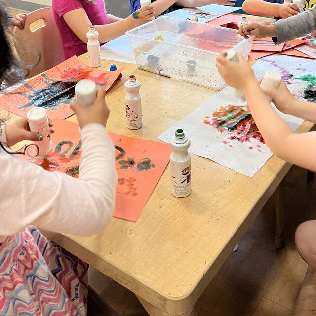
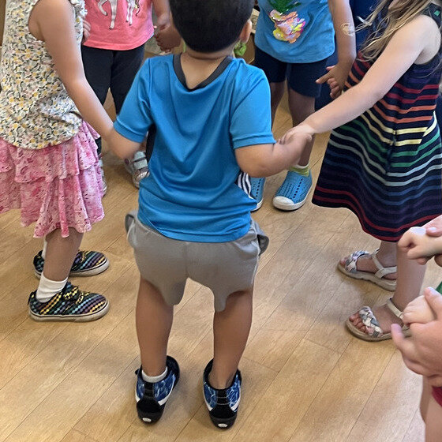
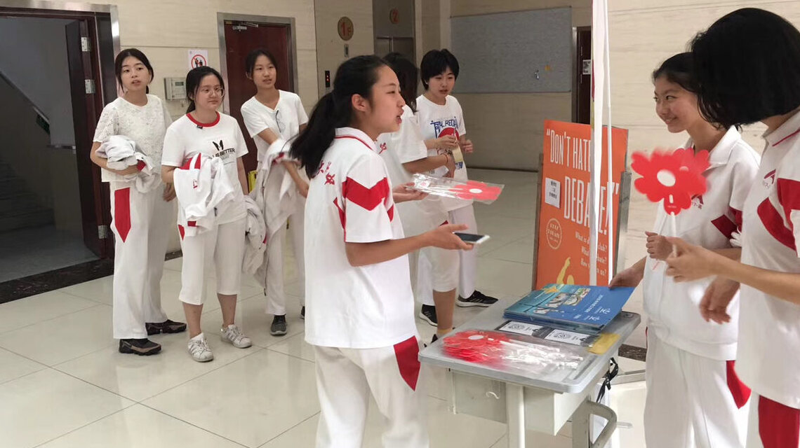
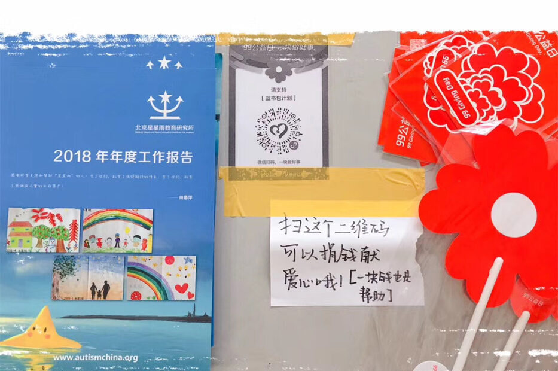
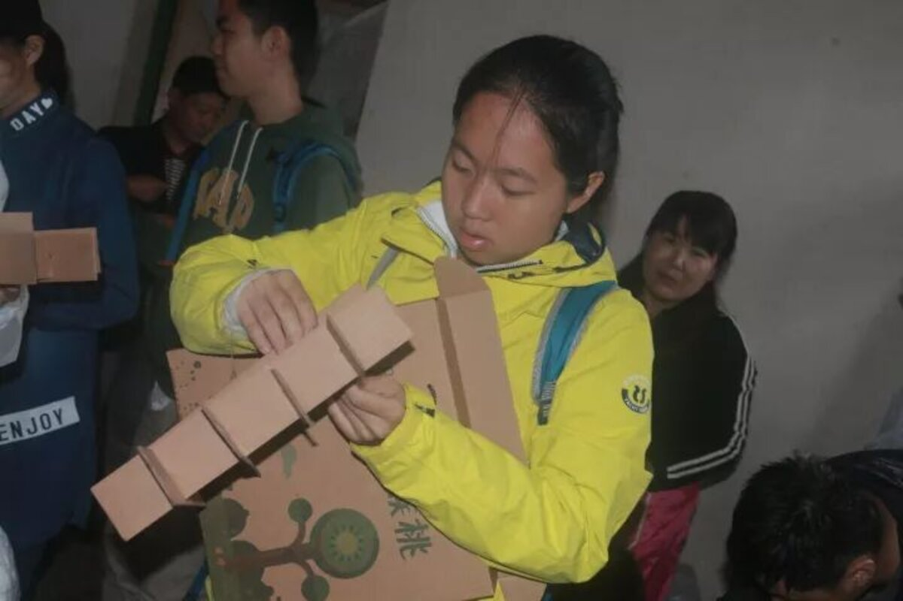
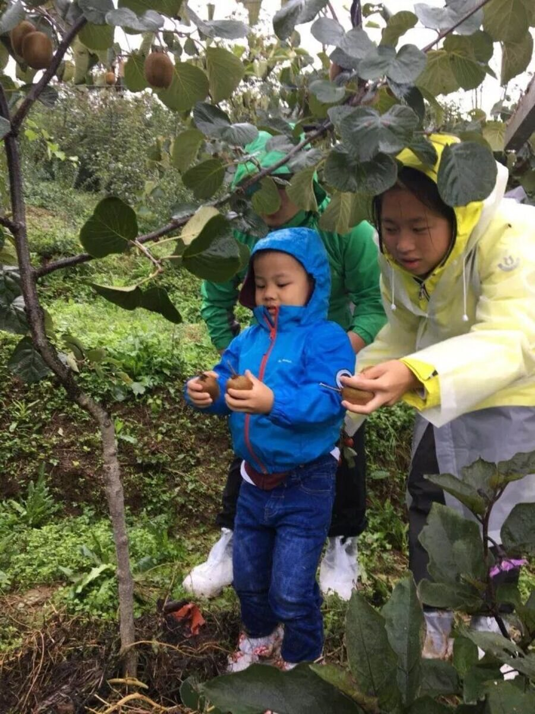

With Children
The fieldwork behind the research.
Teaching · Lemberg Children’s Center
Teaching assistant · Brandeis University · 60 preschoolers · 2023–2024
Structured play, music circles, story time, playground duty. Every day, all year.


Volunteering · Autism Spectrum Support
Beijing Stars and Rain · Waltham Group Spectrum
“Charity is not one person doing a lot — it is many people each doing a little.” — me at 17, fundraising on Tencent 99 Giving Day
I organized my school’s fundraising campaign for the Blue Schoolbag Project of Beijing Stars and Rain, China’s first autism education non-profit. Blue Schoolbag gives families of newly diagnosed children (ages 2–6) their first science-based guidance, at the moment they are most vulnerable to misinformation. Later, at Brandeis, I spent weekends with children on the spectrum through the Waltham Group Spectrum program.


Rural China · Deng Fei Foundation
Project coordinator · 2017–2018, 2022
Selling village-grown kiwi and camellia oil online to fund rural children’s education — and packing the shipping boxes myself. I wrote about this work (in Chinese).


Growing up in Beijing, rural China felt distant. This work made it feel less so.